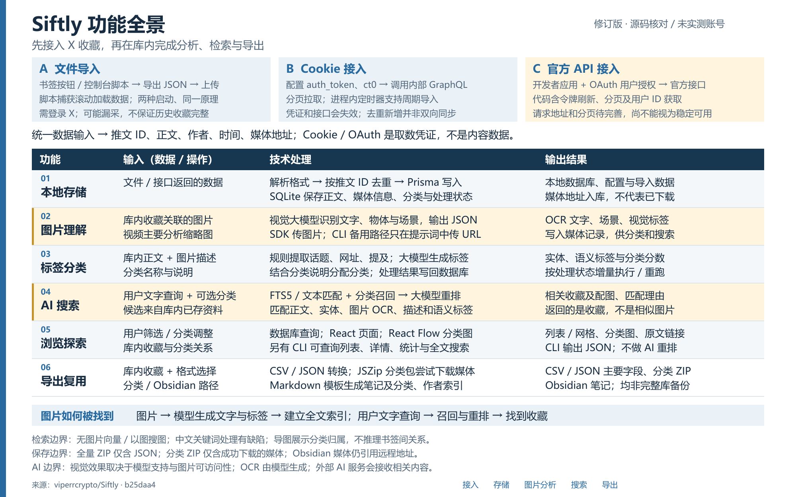

自己的 X 收藏
推文 ID、正文、作者、时间，以及图片和视频地址。Cookie 与 OAuth 是获取数据的凭证，不是内容数据。
OPEN SOURCE FIELD NOTES · 008
把 X 收藏变成可搜索的个人资料库：通过文件或账号接入获取内容，用视觉大模型补充图片信息，再以全文检索和大模型重排找回工具、教程与视觉素材。

01 / 我们如何理解它
Siftly 是一套有网页界面和后端的自托管应用。核心价值是把零散的社交媒体收藏，转成有标签、有分类、可检索、可导出的个人资料库。
推文 ID、正文、作者、时间，以及图片和视频地址。Cookie 与 OAuth 是获取数据的凭证，不是内容数据。
规则提取实体，视觉模型描述图片，大模型生成语义标签并分类；分析结果保存下来，供以后复用。
列表与分类图、附匹配理由的搜索结果，以及 CSV、JSON、分类 ZIP 和 Obsidian 笔记。
这是一页对上游仓库的研究说明。GitHub Pages 仅发布本静态页面；Siftly 的数据库、采集与 AI 服务需要另行部署。
02 / 获取数据是第一步
登录 X 后，用书签按钮或控制台脚本启动采集。脚本自动滚动，并捕获网页后续请求返回的 JSON；导出后上传到 Siftly。
两种启动方式，共用同一采集原理：拦截 fetch / XHR 响应。
可能遗漏启动前已加载的数据，或因等待超时提前结束；“导出完成”不等于取完所有历史收藏。
本地配置 auth_token 和 ct0，程序调用 X 网页内部 GraphQL 接口，按游标分页导入。
支持按 1、4、8、24 小时周期运行；调度位于应用进程内。
凭证过期、查询 ID 或响应格式变化都会影响获取；当前主要是去重新增，不是双向同步。
配置 X 开发者应用，用户登录并授权；代码交换访问令牌、获取用户 ID、刷新过期令牌，再请求收藏。
有正式授权与分页文档，是更适合长期维护的方向。
代码读取收藏时使用 /2/users/me/bookmarks，与官方要求的真实用户 ID 路径不一致；默认 5 页、最多 20 页，需修正和实测。
三条路径均未经本次真实账号测试。可靠性应以实际取数、历史覆盖和失败恢复验证为准。官方接口的权限与计费以 X 当前文档为准。
03 / 功能与技术对应
主要技术栈为 Next.js / React / TypeScript、Prisma / SQLite，以及 React Flow。AI 能力通过模型适配层调用，未看到模型训练或微调实现。
输入：文件或接口返回的数据。
技术：解析格式，按推文 ID 去重，经 Prisma 写入 SQLite。书签、媒体和分类以关系表关联。
输出：正文、作者、导入数据、媒体地址、分类及处理状态。媒体地址入库不等于下载完成。
输入：库内收藏关联的图片 / GIF，视频主要分析缩略图。
技术：视觉大模型识别文字、物体、场景与图表，并返回结构化 JSON。SDK 路径传入编码后的图片；CLI 备用路径仅在提示词里传 URL，效果依赖实际工具访问能力。
输出：OCR 文字、场景、情绪和视觉标签，保存到媒体记录。OCR 由模型生成，没有独立 OCR 引擎。
输入：正文、图片分析结果，以及用户定义的分类名称与说明。
技术：规则提取话题、网址、提及与已知工具；大模型生成语义标签并分配分类。分类说明影响提示词。
输出：实体、标签与分类置信度写回数据库；按处理状态增量运行，或手动重跑。
输入：用户的文字问题及可选分类。
技术：关键词提取、FTS5 全文召回、分类意图规则，再由大模型重排。全文索引不可用或无命中时回退文本匹配；候选不足时补近期资料。
输出：相关收藏、配图、分数与匹配理由。未进入候选集的资料，模型无法在重排阶段找回。
输入：筛选条件、分类调整与库内分类关系。
技术：数据库查询与分页，React 呈现列表 / 网格；React Flow 展示分类图。另有 CLI 查询列表、详情、统计和全文搜索。
输出：分类导航和原文入口；CLI 返回 JSON，不执行 AI 重排。导图展示归属，没有书签间观点或引用关系推理。
输入：库内收藏、格式选择，以及分类或 Obsidian 路径。
技术：转换 CSV / JSON，JSZip 打包，Markdown 模板生成笔记及分类、作者索引。
输出：CSV / JSON 主要字段；分类 ZIP 包含清单和成功下载的媒体；全量 ZIP 仅含 JSON。Obsidian 媒体仍指向远程地址，导出不等于完整数据库备份。
关键原理 / 图片如何被找到
例如，一张收藏里的比特币下跌图，可以先被描述为“bitcoin、price chart、falling”等标签。用户输入 bitcoin crash chart，系统通过这些文字找回候选，再让大模型判断相关性。此例仅说明机制，不是实测结果。
当前没有图片向量检索、CLIP 相似度匹配或上传图片找相似图。中文关键词提取会过滤中文字符，纯中文查询的召回可能明显受损。
04 / 使用场景
收藏了很多 React 教程或开发工具，可以按技术主题和用途回找，而不必记住原作者与准确措辞。
把工具发布、功能介绍和行业观点归类。准备使用某项功能时，按用途重新找到原始收藏。
收藏界面截图、图表和梗图，通过图片文字、场景与标签寻找参考。效果取决于图片分析与召回质量。
导出带来源、标签和索引的笔记，减少手工整理，再由自己完成阅读、归纳和长期积累。
这些场景是基于代码能力的应用推导。它尚不是全网自动采集器、通用文档问答系统或团队协作知识库。
05 / 研究结论与优化方向
修正官方请求地址，保存分页进度，处理限流与中断；区分正常结束、达到上限与失败停止。
验证长推文、线程和媒体保存范围；修复中文处理，建立已知答案的检索评估，再决定是否增加向量召回。
增加带来源引用的问答、多源接入、可靠任务队列与成本统计。以上是建议，当前并未全部实现。
应用与数据库可在本地运行，使用外部模型时相关文本和图片仍会发送到模型服务。实际视觉支持、费用和运行效果依赖模型、凭证与网络。本次没有运行上游应用、使用真实 X 账号或调用付费 AI。
06 / 可核查的依据
核对日期：2026-09-09；上游版本 b25daa4。图为本研究的说明图，不是上游界面截图。